Repair Procedures
Replacement
Cluster Replacement
CAUTION:
- When prying with a flat-tip screwdriver, wrap it with protective tape, and apply protective tape around the related parts, to prevent damage.
- Put on gloves to protect your hands.
1. Using a screwdriver or remover, remove the cluster fascia upper panel (A).
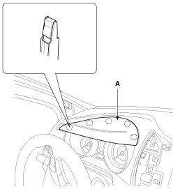
2. Using a screwdriver or remover, remove the shroud upper cover (A).
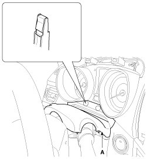
3. After loosening the mounting screws, then remove the cluster assembly (A).
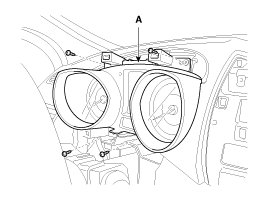
4. Disconnect the connector (A).
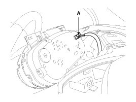
5. Installation is the reverse of removal.
NOTE:
- Make sure the connectors are connected in properly.
- Replace any damaged clips.
Center Facia Panel Replacement
CAUTION:
- A plastic trim tool is recommended, but if prying with a screwdriver, wrap it with protective tape, and apply protective tape around the related parts, to prevent damage.
- Put on gloves to protect your hands.
1. Using a screwdriver or remover, remove the crash pad center garnish (A).
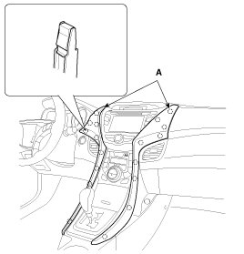
2. After loosening the mounting screws, then remove the center fascia panel (A).
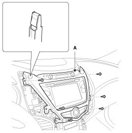
3. Disconnect the connector (A).
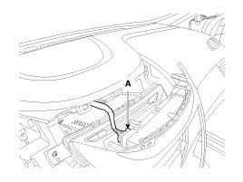
4. Installation is the reverse of removal.
NOTE:
- Make sure the connectors are connected in properly.
- Replace any damaged clips.
Crash Pad Lower Panel Replacement
CAUTION:
- When prying with a flat-tip screwdriver, wrap it with protective tape, and apply protective tape around the related parts, to prevent damage.
- Put on gloves to protect your hands.
1. Using a screwdriver or remover, remove the crash pad side cover (A).
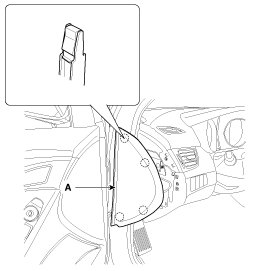
2. Using a screwdriver or remover, remove the relay box cover (A).
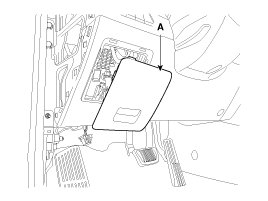
3. Disconnect the connector (A).
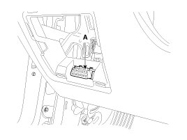
4. After loosening the mounting screws, then remove the crash pad lower panel (A).
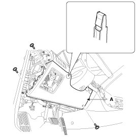
5. Installation is the reverse of removal.
NOTE:
- Make sure the connectors are connected in properly.
- Replace any damaged clips.
Audio assembly Replacement
CAUTION:
- A plastic trim tool is recommended, but if prying with a screwdriver, wrap it with protective tape, and apply protective tape around the related parts, to prevent damage.
- Put on gloves to protect your hands.
1. Using a screwdriver or remover, remove the crash pad center garnish (A).
2. After loosening the mounting screws, then remove the center fascia panel (A).
3. Disconnect the connector (A).
4. After loosening the mounting screws, then remove the audio assembly (A).
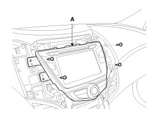
5. Disconnect the connectors.
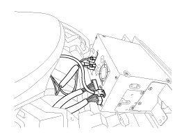
6. Installation is the reverse of removal.
NOTE:
- Make sure the connectors are connected in properly.
- Replace any damaged clips.
Heater Control Unit Replacement
CAUTION:
- A plastic trim tool is recommended, but if prying with a screwdriver, wrap it with protective tape, and apply protective tape around the related parts, to prevent damage.
- Put on gloves to protect your hands.
1. Using a screwdriver or remover, remove the crash pad center garnish (A).
2. After loosening the mounting screws, then remove the center fascia panel (A).
3. Disconnect the connector (A).
4. After loosening the mounting screws, then remove the audio assembly (A).
5. Disconnect the connectors.
6. After loosening the mounting screws, then remove the heater control unit (A).
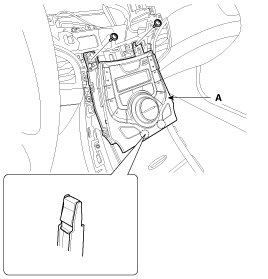
7. Disconnect the connectors (A) and hose (B).
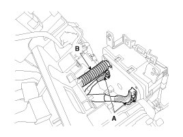
8. Installation is the reverse of removal.
NOTE:
- Make sure the connectors are connected in properly.
- Replace any damaged clips.
Glove Box Replacement
CAUTION:
- When prying with a flat-tip screwdriver, wrap it with protective tape, and apply protective tape around the related parts, to prevent damage.
- Put on gloves to protect your hands.
1. Using a screwdriver or remover, remove the crash pad side cover (A).
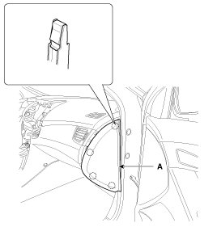
2. Disconnect the guide (B) from the glove box (A).
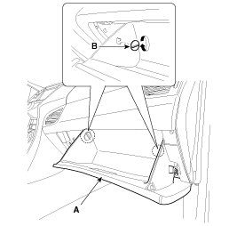
3. Disconnect the lift (A) from the glove box (B).
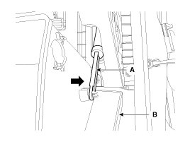
4. Disconnect the pin (A) and then remove the glove box (B).
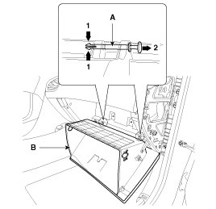
5. After loosening the mounting screw, then remove the center crash pad passenger's panel (A).

6. After loosening the mounting screws and bolts, then remove the glove box housing (A).
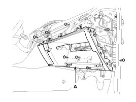
7. Installation is the reverse of removal.
NOTE:
- Make sure the connectors are connected in properly.
- Replace any damaged clips.
Shroud Replacement
1. After loosening the mounting screws, then remove the shroud assembly (A).
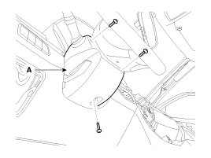
2. Installation is the reverse of removal.
Crash Pad Side Cover Replacement
CAUTION:
- When prying with a flat-tip screwdriver, wrap it with protective tape, and apply protective tape around the related parts, to prevent damage.
- Put on gloves to protect your hands.
1. Using a screwdriver or remover, remove the crash pad side cover (A).
[Driver's]
[Passenger's]
2. Installation is the reverse of removal.
NOTE:
- Replace any damaged clips.
Main Crash Pad Replacement
CAUTION:
- When prying with a flat-tip screwdriver, wrap it with protective tape, and apply protective tape around the related parts, to prevent damage.
- Put on gloves to protect your hands.
1. Remove the following items.
A. Front seat
B. Front pillar trim
C. Floor console assembly
D. Front door scuff trim
E. Cowl side trim
F. Crash pad center garnish
G. Crash pad side cover
H. Crash pad lower panel
I. Cluster fascia upper panel & Cluster assembly
J. Center fascia panel
K. Audio assembly
L. Heater control unit
M. Center crash pad passenger's panel
N. Glove box & Glove box housing
O. Steering column
2. After loosening the mounting screw, nut, clip, then remove the console side cover (A).
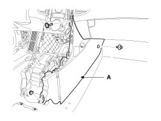
3. Disconnect the connector (A).
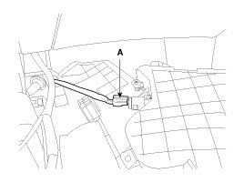
4. After loosening the mounting screw, then remove the center crash pad passenger's panel (A).
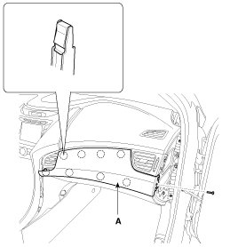
5. Using a screwdriver or remover, remove the center crash pad driver's panel [RH] (A).
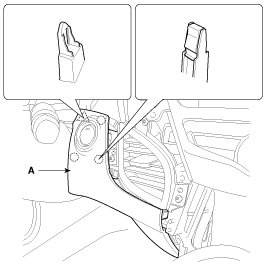
6. Disconnect the connector (A).
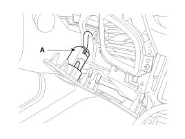
7. After loosening the mounting screws, then remove the center crash pad driver's panel [LH] (A).
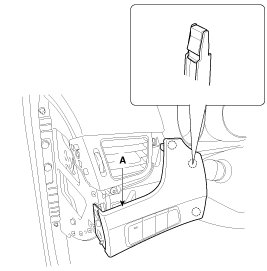
8. Disconnect the connectors (A).
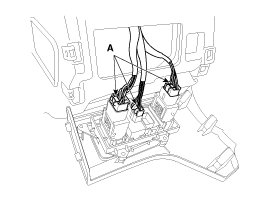
9. Disconnect the passenger`s airbag connectors (A).
10. Loosen the mounting bolts.
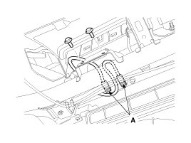
11. Using a screwdriver or remover, remove the photo sensor (A).
12. Disconnect the photo sensor connector (B).
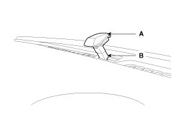
13. Disconnect the connector (A).
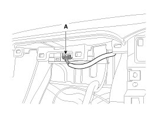
14. After loosening the mounting bolts and nuts, screw, then remove the main crash pad assembly (A).
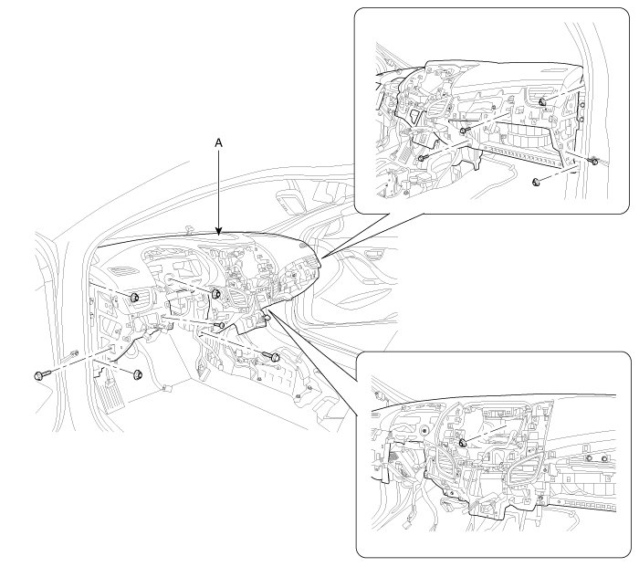
15. Installation is the reverse of removal.
NOTE:
- Make sure the crash pad fits onto the guide pins correctly.
- Before tightening the bolts, make sure the crash pad wire harnesses are not pinched.
- Make sure the connectors are plugged in properly, and the antenna lead is connected properly.
- Enter the anti- theft code for the radio, then enter the customer`s radio station presets.
Cowl Cross Bar Replacement
CAUTION:
- When prying with a flat-tip screwdriver, wrap it with protective tape, and apply protective tape around the related parts, to prevent damage.
- Put on gloves to protect your hands.
1. Remove the following items.
A. Front seat
B. Floor console assembly
C. Cowl top cover
D. Main crash pad
2. Disconnect the blower unit connectors.
3. Disconnect the multi box connectors.
[Driver's]
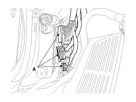
4. Disconnect the multi box connectors.
[Passenger's]
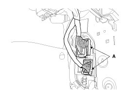
5. Disconnect the passenger compartment junction box connectors.
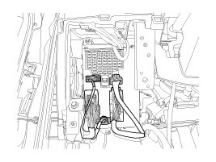
6. Disconnect the airbag control module (SRSCM) connectors (A).
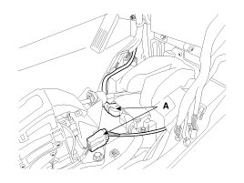
7. Disconnect the connector (A) and the mounting clips in the front pillar.
[Driver's]
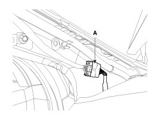
[Passenger's]
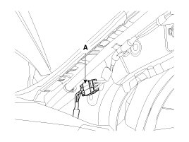
8. After loosening the mounting bolts and nuts, then remove the cowl cross bar assembly (A).
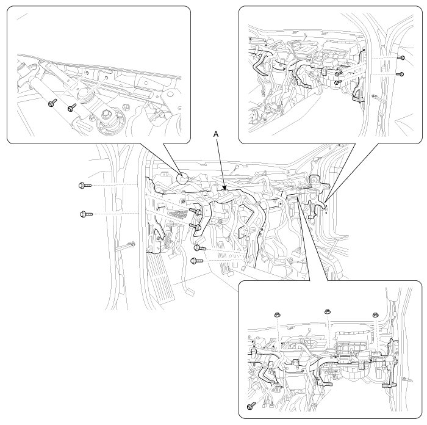
9. Installation is the reverse of removal.
NOTE:
- Make sure the connectors are connected in properly.
- Replace any damaged clips.